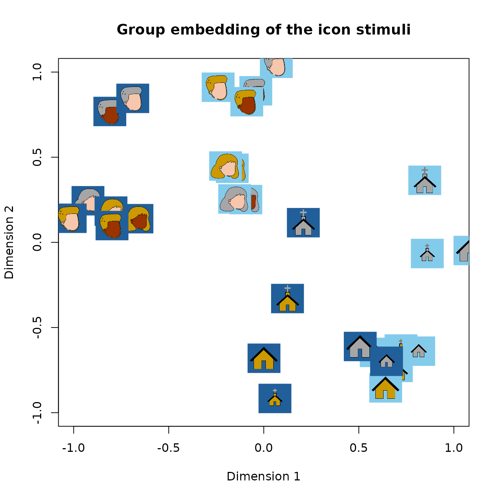

Getting Started with tripletTools
tripletTools.RmdWhat is a triplet task?
In a triplet (triadic comparison) task, a participant sees a
referent item and two option items, and judges which
option is more similar to the referent. From many such judgments across
many items and participants, tripletTools computes a
similarity embedding: a low-dimensional coordinate
space in which items that are frequently judged as similar end up placed
nearby.
This guide walks through the whole pipeline, in order: installation, one-time setup, fitting an embedding, and evaluating/visualizing the result. Every function used here is documented in more depth elsewhere — see Where to go next at the end.
Installation
install.packages("remotes")
remotes::install_github("Knowledge-and-Concepts-Lab/tripletTools", build_vignettes = TRUE)One-time setup: the Python embedding backend
Fitting a new embedding from triplet judgments runs inside a self-contained conda environment (PyTorch, NumPy, and friends), since that’s where the actual optimization happens. Set it up once, ever, per machine:
PyTorch is a sizeable download (300–800MB for a CPU build), so the
first run takes a few minutes. You do not need to call
this again in future R sessions — the environment is detected and
activated automatically when the package loads. See
?setup_python_env if conda isn’t found on your system, or
the “Computing Triplet Embeddings” vignette for GPU/CUDA setup.
If you only want to analyze embeddings someone else already computed (rather than fitting new ones from raw judgments), you can skip this step entirely — none of the analysis, evaluation, or comparison tools in this package touch Python.
Explore the bundled example data
tripletTools ships a complete worked example: triplet
judgments from 6 participants on 32 icon stimuli (faces and buildings),
the icon images themselves, and a precomputed group embedding — enough
to try the rest of this guide with no fitting required.
# One participant's triplet judgments
str(icon_triplets[[1]])
#> 'data.frame': 230 obs. of 11 variables:
#> $ head : int 29 14 30 17 29 25 3 16 27 4 ...
#> $ winner : int 24 0 19 12 9 23 11 18 19 6 ...
#> $ loser : int 19 24 24 13 8 12 19 2 15 5 ...
#> $ worker_id: chr "3n7ggxph" "3n7ggxph" "3n7ggxph" "3n7ggxph" ...
#> $ rt : int 3096 1100 2616 2629 2011 1498 1469 1840 1271 1180 ...
#> $ Center : chr "pnhns" "fnmyb" "pnhob" "pdcns" ...
#> $ Left : chr "pncnb" "fdfob" "pncnb" "fnmow" ...
#> $ Right : chr "pdcos" "pncnb" "pdcos" "fnmob" ...
#> $ Answer : chr "pncnb" "fdfob" "pdcos" "fnmob" ...
#> $ sampleAlg: chr "random" "random" "random" "validation" ...
#> $ sampleSet: chr "train" "train" "train" "train" ...
# The 32 stimulus images
length(icon_pics)
#> [1] 32Visualize an embedding
icon_emb_group is a precomputed 3D group embedding of
the 32 icons. plot_pics() plots each item’s image at its
embedding coordinates instead of a plain point, so you can see directly
what the space captures:
emb <- icon_emb_group
rownames(emb) <- emb$item
plot_pics(emb[, c("dim_0", "dim_1")], icon_pics,
psize = 0.04,
xlab = "Dimension 1",
ylab = "Dimension 2",
main = "Group embedding of the icon stimuli")
Items placed close together were frequently judged as similar across participants.
Evaluate an embedding
A natural question for any embedding is how well it predicts held-out
judgments it wasn’t fit on. get.hoacc() answers this
directly:
Fit your first embedding
With setup done (above), fitting a new embedding from triplet judgments is one function call:
grp <- run_group_embedding_from_list(
triplet_list = icon_triplets,
d = 3L,
max_epochs = 50000L
)
head(grp$embedding)d (the number of dimensions) is a hyperparameter you’d
normally choose via estimate_dimensionality() rather than
guess — see the “Computing Triplet Embeddings” vignette for that and for
fitting per-participant (not just group) embeddings.
Where to go next
| Vignette | Covers |
|---|---|
| tripletTools Overview | Loading data, data quality, inter-subject agreement, clustering participants |
| Computing Triplet Embeddings | The full embedding pipeline: dimensionality selection, individual embeddings, spherical/circular embeddings, parallel and HTCondor execution |
| Comparing Triplet Embeddings to Alternative Representations | Comparing embeddings to language-model embeddings, evaluating them via classifier performance, estimating similarity from verbal-fluency data |
| Read Triplet Data | File formats and reading in data from a new study |